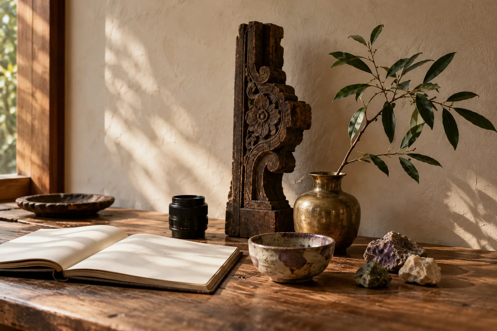
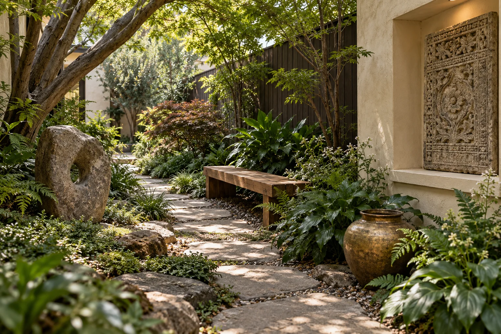
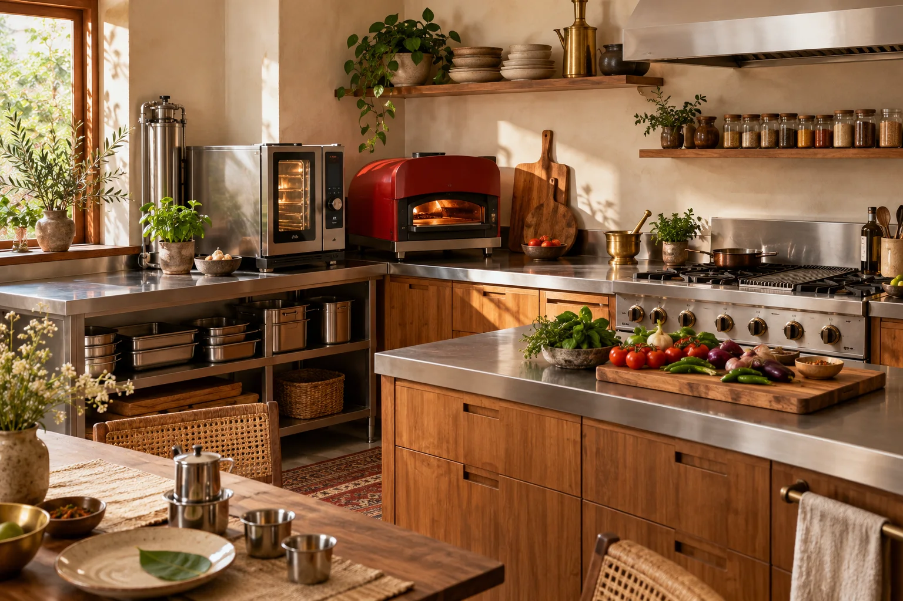
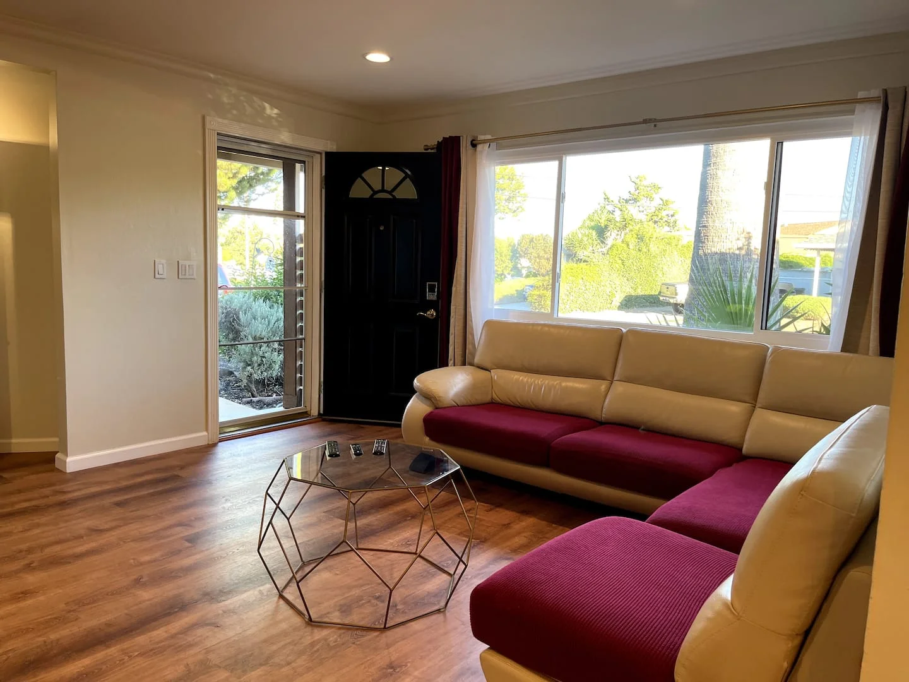

Santa Clara · Two bedrooms
Simple & Sleek
Light, warm materials, and an easy connection to the garden. A place to settle in, work, or spend time together.
Explore & book on Airbnb ↗
A personal practice of inquiry, imagination, and care.
Give a question physical form.
Welcome the meanings others discover.
Pass what we learn forward.
01 / Inquiry
An engineer’s curiosity. Questions about how we connect with spaces, objects, technology, and one another.

02 / Vision
An artist’s vision. Imagining how light, material, culture, and nature might come together.

03 / Care
Empathy begins with a welcome—and stays curious about the meanings someone else discovers.

04 / Stewardship
Observe. Listen. Refine. Build a practice with the care and resources to endure.

05 / Generosity
Share what we discover. Give the next generation room to question, make, and find their own way.

Places to stay / Santa Clara, California
Two homes where care becomes something you can experience.
Ready to book on Airbnb. Find your dates, explore the homes, and make yourself at home.
Santa Clara · Two bedrooms
Light, warm materials, and an easy connection to the garden. A place to settle in, work, or spend time together.
Explore & book on Airbnb ↗
Santa Clara · Two bedrooms
A comfortable retreat with a garden outlook. Room to pause, reconnect, and enjoy a different rhythm.
Explore & book on Airbnb ↗Check availability, prices, amenities, and house rules on Airbnb. The photographs above show the actual homes. Other RĀSA explorations are by invitation and are arranged separately from a stay.
RĀSA by Mano
A continuing personal practice by Manohar Srikanth.
Meet Mano ↗